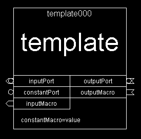

| VisualDCT Hierarchy Additions | |
|---|---|
| Project: | VisualDCT |
| Classification: | Specification |
| Identification: | CSL-SPE-02-XX |
| Copyright © 2002 by Cosylab Ltd. All Rights Reserved. | |
| Revision | Date | Author | Section | Modification |
|---|---|---|---|---|
| 1.0 | 2002-11-26 | Matej Sekoranja | ||
| all | Created. | |||
| 1.1 | 2003-07-18 | Matej Sekoranja | ||
| all | Updated to reflect implementation. |
The document is based on discussion between Andrew Johnson, John Maclean, Rozelle Wright and Matej Sekoranja held at APS on 25th November 2002.
This document is classified as a public document. Redistribution and use, with or without modification, are permitted provided that:
| ID | Author | Reference | Revision | Date | Publisher |
|---|---|---|---|---|---|
| 1 | Matej Sekoranja | VisualDCT Project | 2002 | Cosylab, Ltd. | |
| 2 | Matej Sekoranja | VisualDCT EPICS Databases Hierarchy Support | 2002 | Cosylab, Ltd. |
This document's meta-information (authors, revision history, table of contents, ...) can be found above. What follows below is the body of the document. The body is composed of several sections, which may be further composed of subsections.
Typographical styles are used to denote entities of different kinds. For a full list of entities and their respective typographic conventions, please refer to the Styles section of the XML Documentation document.
When viewing the document in a non-printed form, it is possible to submit comments regarding a given section to the document's owner. This is achieved by clicking the mail icon next to the section title. For this to work, your mail must be configured to properly handle the mailto URLs.
After implementing new additions template instance symbol should look like this:

Figure 1: Template instance symbol
[Matej Sekoranja] I find having 2 columns (sides) very useful - to separate inputs (left size) from outputs (right side).
Ports are used to pass information upwards out of a template instance to their calling database (to higher level), i.e. taking a string (link name or constant) out of a template instance.
All additional visual data used by VisualDCT is stored as comments in the template block statement.
All ports have to be defined in the lower level schamantics. Just after creating a new port, done simply by mouse clicking, user has to determine the type of the port.
There are three different port types:
There should also be a possiblity of defining a default state port vislibility (inspector, context sensitive pop-up menu).
[Matej Sekoranja] To provide possibility of definining kind of a function (e.g. "(field name) PP"), VDCT data should look like this:
port("port name", "expression", "desc")
#! InputPort("port name", "target field name", xpos, ypos, colour, defaultVisibility)
Listing 1: Visual definition of a port.
At the higher level ports are represented as shown in section Template instance symbol.
In the inspector user has to have the availability of overriding the default visibility of the ports.
Macros are used to pass information downwards into a template instance from their calling database (from higher level), i.e. taking a string (link name or constant) into a template instance.
To have macros visible as links in the higher level, they have to be to be defined in the lower level schamantics. Just after creating a new macro, done simply by mouse clicking, user has to determine the type of the macro.
There are two different macro types:
There should also be a possiblity of defining a default state macro vislibility (inspector, context sensitive pop-up menu).
[Matej Sekoranja] VDCT data should look like this:
macro("macro name", "expression") // defined in the higher level
#! InputMacro("macro name", description, xpos, ypos, colour, defaultVisibility)
Listing 2: Visual definition of a macro.
At the higher level ports are represented as shown in section Template instance symbol.
In the inspector user has to have the availability of overriding the default visibility of the ports.
Creating an ordinary macro (substitution variable), CONSTANT macro, can easily achieved by using inspector.
|